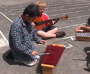

Teacher Professional Development Materials Teacher Professional Development Materials |
Music Programme – Belmont Primary School
Planning and Content
|
- The programme is planned as a two–year cycle and in line with the new Arts Curriculum document. Download the overview (PDF, 12K) for an example of the two year cycle.
- Alternating weekly formal assemblies with singing assemblies provides useful forums for performance.
- Planning is done in three broad curriculum levels (1–3), with some modification within the levels, particularly year 1 and 2, to cater for different stages of the students' learning. Units of work take between 4 and 6 weeks, so that two units fill a term.
- Some skill learning continues throughout the year. For example, years 3 and 4 began learning the recorder in 2001, so the teacher tries to incorporate recorder activities each week for these groups.
- Year 1 and 2 students are becoming adept at hearing and singing intervals using sol–fa (a system of naming pitches) and this skill is learned only by regular practice throughout the year.
- Links are made with themes in social studies, science or health. For example dinosaur names are useful for rhythm work (PK and DI), the history of New Zealand can easily be applied to music (UC), and a focus on animals lends itself well to rhythmic exploration, movement and singing. The music specialist comments;
|
To provide opportunities for performance, younger classes (or any staff member who is seen walking across the playground!!) are invited to listen to a class performance.
Shirley Harvey
|
|
However, there are dangers in thematic links. It is easy to be carried away by the content and forget about the music learning outcomes, so if the myriad songs about conservation can't be used to help achieve the learning outcomes for the music unit, they are often best left out.
Shirley Harvey
|
 |
|
Examples of compositional content
- A class set of buckets turned upside down and used as drums has been highly successful for rhythmic improvisation with year 5 and 6.
- Poems and stories have stimulated ideas for selecting sounds for class and group sound picture compositions, which have later been recorded in graphic notation.
- Year 3 and 4 students have invented 3–note tunes, played them on recorders and notated them on the music stave.
- Year 5 and 6 students have invented pentatonic melodies, which have formed the basis of group compositions with an Orff Schulwerk flavour.
Assemblies – music assemblies and formal assemblies
|
|
|
- Each Friday morning is designated alternately as a music assembly or a more formal school assembly, which many parents attend. The new hall makes this possible in all weather!
- Music assemblies consist largely of singing practice for the formal assembly programme, but performances by guests and students from the school are often included.
- Music for each term is dubbed on cassette for each teacher and overhead transparencies are filed centrally for class or syndicate use.
Assessment
|
 |
- Musical knowledge can be assessed in written form with students above year 2.
- Performance assessment of musical skills often requires careful planning of tasks, which allow for individual responses to be observed. Sometimes class teachers assist by observing and recording. More confident teachers may take an activity while the specialist observes the students. A video recorder (with operator) would be a useful resource for this purpose.
- Self-assessment is used to gauge self-efficacy regarding music.
- Each child completes one portfolio task during the year and comments are written on school reports for each child at the end of the year.
- The working curriculum level in music is estimated and recorded for each child for the school record.
- Recently, several 5- and 6-year-olds have been assessed as needing more focused help to match their voice to a given pitch. Since one festival is over, and there is a 30 minute non-contact time slot available, it has been possible to work with these students in small groups. The use of scarves, puppets and picture books has allowed for repetition and practice whilst maintaining the interest of the students.
|
Children's self-assessment always reflects their enjoyment of improvisation and simple composition and the aim is to include some of this in each lesson.
Shirley Harvey
|
|
|